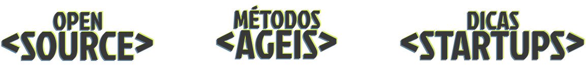

DESENVOLVA-SE COMO UM DESENVOLVEDOR
FREECODE
A melhor maneira para granhar experiência no mundo da programação é passando por problemas que geralmente
acontece para os desenvolvedores, problemas esses que os profissionais precisam resolver o mais rápido
possível da melhor forma possível.
Pensando nesta problemática, um sistema inteiro para que novos desenvolvedores treinem e aprendam da melhor
maneira possível foi planejado, baseado totalmente em experiências de problemas reais, para que iniciantes
tenham o que é necessário para iniciar no mundo da tecnologia.
Nossa plataforma contará com 3 tecnologias iniciais para dev’s iniciantes, são elas:


Codigos Open Source são códigos pré prontos para que desenvolvedores possam revisar e estudar a composição e a
estrutura do código. Alguns erros podem até assustar de primeira, mas calma, você consegue
ERROS PARA PRATICAR
No sistema FreeCode, teremos uma variedade de codigos open source para estudo. Além de análise da estrutura,
terá erros propositais para que novos desenvolvedores possam praticar a correção desses erros.
ATUALIZAÇÕES DE CÓDIGOS
O usuário terá uma gama de códigos e atuailizações constantes de novos erros, e demandas cada vez mais
difícil conforme são resolvidos, para sempre manter os estudos de correções de erros em dia.

Os métodos ágeis estarão presente na vida do desenvolvedor frequentemente, dessa forma, é muito importante saber
trabalhar com essa tecnologia, mas não é nada fácil sem a prática!
QUADRO COMPLETO
No sistema FreeCode, teremos uma variedade de demandas exigidas do usuário para que seja realizado, dessa
forma, o método ágil que for escolhido irá entregar as demandas do código open source de forma fiel a uma
experiência do local de trabalho, com nível de dificuldade e descrição do erro.
ATUALIZAÇÕES DE DEMANDAS
O usuário terá uma gama de demanda de diversos níveis e atuailizações constantes de novos pedidos. O usuário
irá aprender como iniciar e como finalizar uma demanda, deixando tudo registrado da maneira que é exigida de
um profissional.
Startup é o principal local onde desenvolvedores iniciantes conseguem a maior oportunidade para desenvolver os
próprios projetos e crescerem como empresa, mas como é o processo?
DICAS DE PITCH
O momento onde é separado os projetos mais desenvolvidos, e aqueles que ainda precisam de mais pesquisa, o
Pitch! Na FreeCode haverá dicas de como apresentar, e o que é mais importante para apresentar, tudo para um
dev ter ótimas oportunidades!
VENDA DE PROJETO
Caso o projeto não tenha dado certo na apresentação, não se preocuope! A FreeCode te conecta com vários
interessados em novos projetos de tecnologia, abrindo espaço para que novas negociações aconteça!
SOBRE A FREECODE
NOSSA HISTÓRIA
A FreeCode nasceu para atender às dificuldades enfrentadas por novos desenvolvedores e programadores sem
experiência. Nosso objetivo é esculpir as habilidades de profissionais prontos para encarar qualquer
desafio na programação, oferecendo as melhores práticas e um ambiente de treinamento que os prepara para o
mercado de trabalho com desafios mais próximos da realidade de mercado.
NOSSA VISÃO
Muitos novos programadores enfrentam bloqueios ao lidar com grandes projetos, temendo erros e julgamentos
futuros no trabalho. Todos esses medos foram baseados de experiências reais, dessa forma, a FreeCode busca
eliminar esses bloqueios, proporcionando a preparação necessária para integrar iniciantes às equipes de
desenvolvimento e tornar o mundo da tecnologia mais acessível.
NOSSA TECNOLOGIA
Nossa tecnologia oferecerá total suporte a novos desenvolvedores, além de proporcionar um ambiente de
trabalho acessível para qualquer programador, com ou sem experiência e com ou sem equipe de
desenvolvimento. Contamos com uma estrutura organizada para cada projeto, utilizando ferramentas para
criação de diagramas e protótipos, armazenamento em nuvem para documentos e um espaço dedicado à venda de
projetos autorais, permitindo o desenvolvimento colaborativo com novos parceiros.
Contatos
-
freecodecontato@outlook.com
-
Tel: (61) 9 9228-6611
-
QS 07, Lote 01, Taguatinga Sul - Taguatinga, Brasília - DF, 71966-700